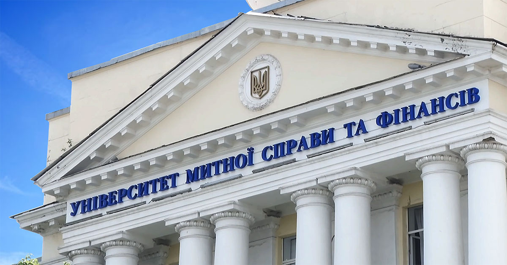

Про мене
Завідувач кафедри комп'ютерних наук та інформаційних технологій в Університеті митної справи та фінансів. Сфера наукових інтересів: інтелектуальні автоматизовані системи, методи обробки нечітких та неповних даних.
Досягнення
1997
Закінчила Дніпропетровський національний університет за спеціальністю математика, викладач математики.
2005
Присуджено науковий ступінь кандидата технічних наук.
Сертифікати
Організаційна робота
- 2018 — Заступник відповідального секретаря приймальної комісії з внесенням документів вступників.
- 2019 — Робота з міжнародною наукою та представниками інших вишів.
- з 2021 — Вчений секретар комісії.
- з 2022 — Внесення обов'язків куратора груп К-21м.